En esta sección se reúne una colección de referencias visuales y conceptuales que capturan la esencia del Frutiger Aero. Imágenes, lugares, objetos, prendas, estilos y publicidades que reflejan la estética tecnológica y optimista de los años 2000. El objetivo es mostrar cómo este estilo combina lo digital con lo orgánico: transparencias, reflejos, brillos, naturaleza, futurismo y una sensación constante de movimiento y frescura. Cada inspiración ayuda a construir una mirada visual que conecta el pasado con el futuro, reinterpretando la era en que la tecnología prometía un mundo más limpio, brillante y conectado.
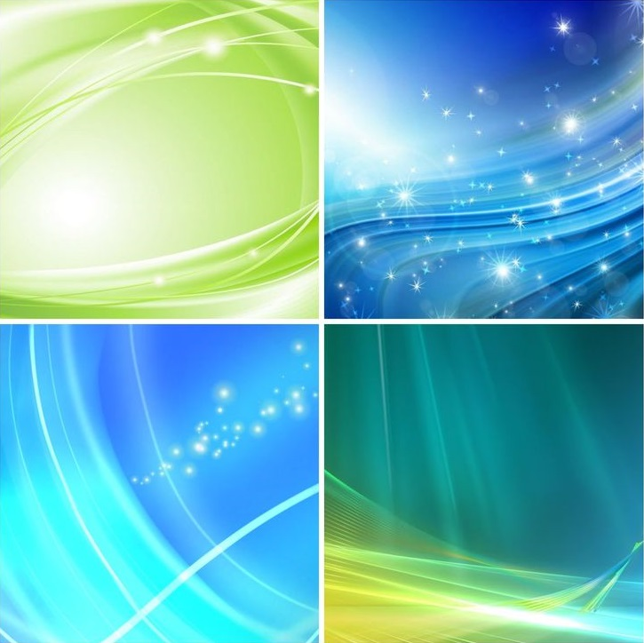
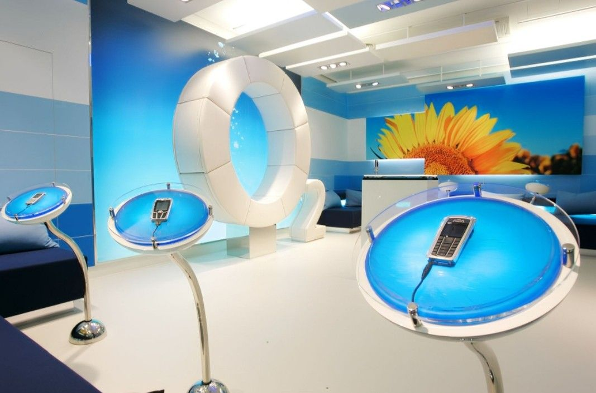
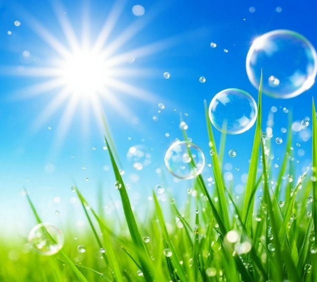
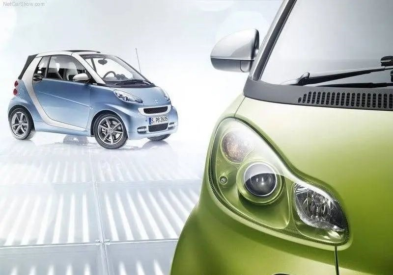
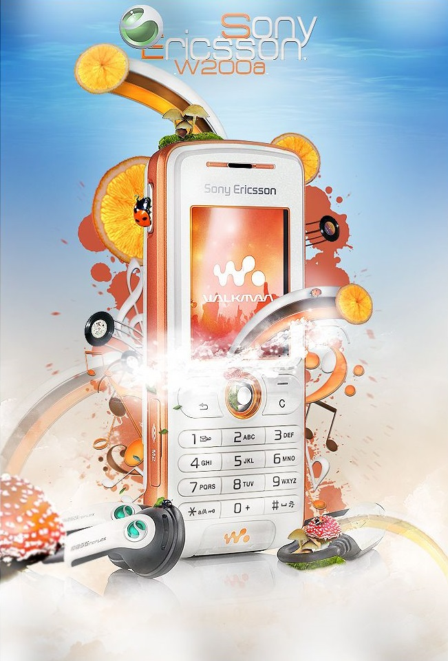
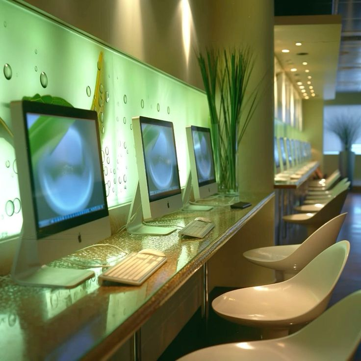
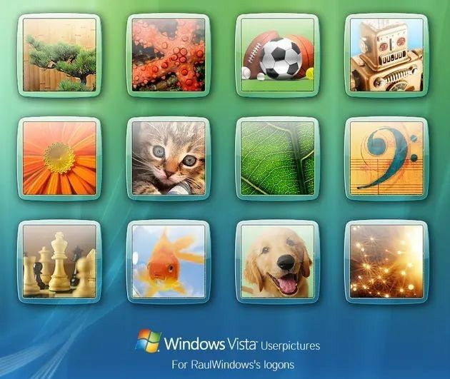
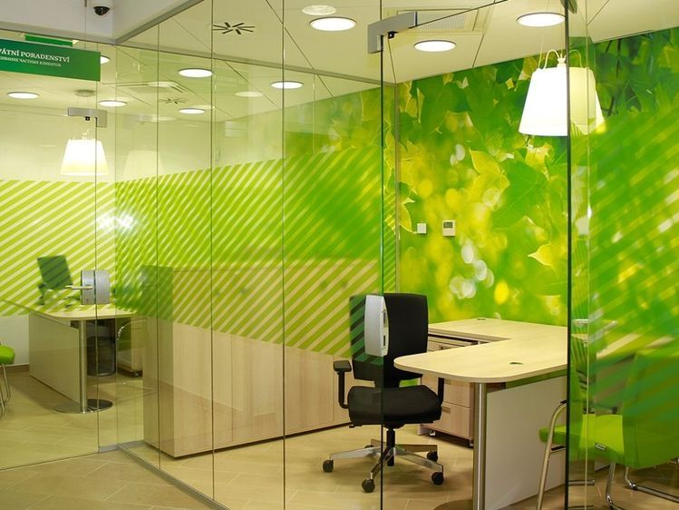
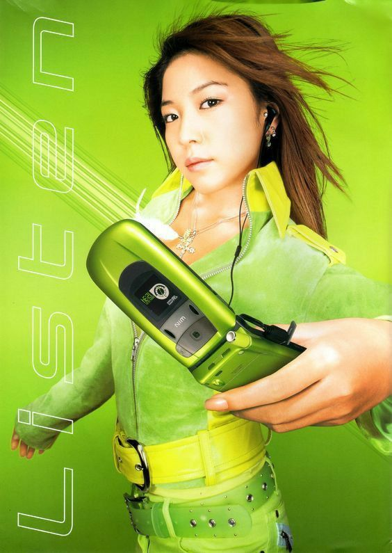
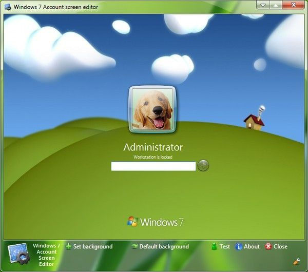
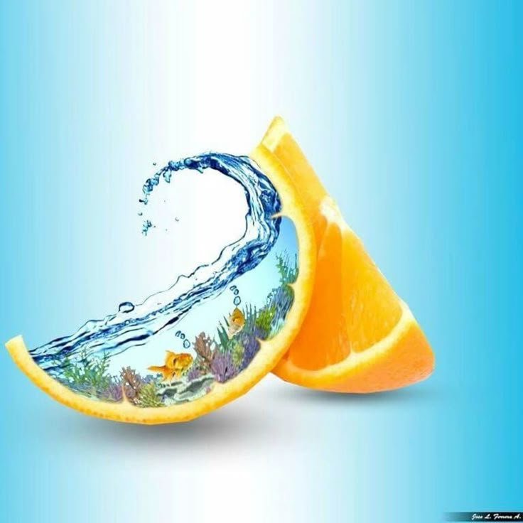
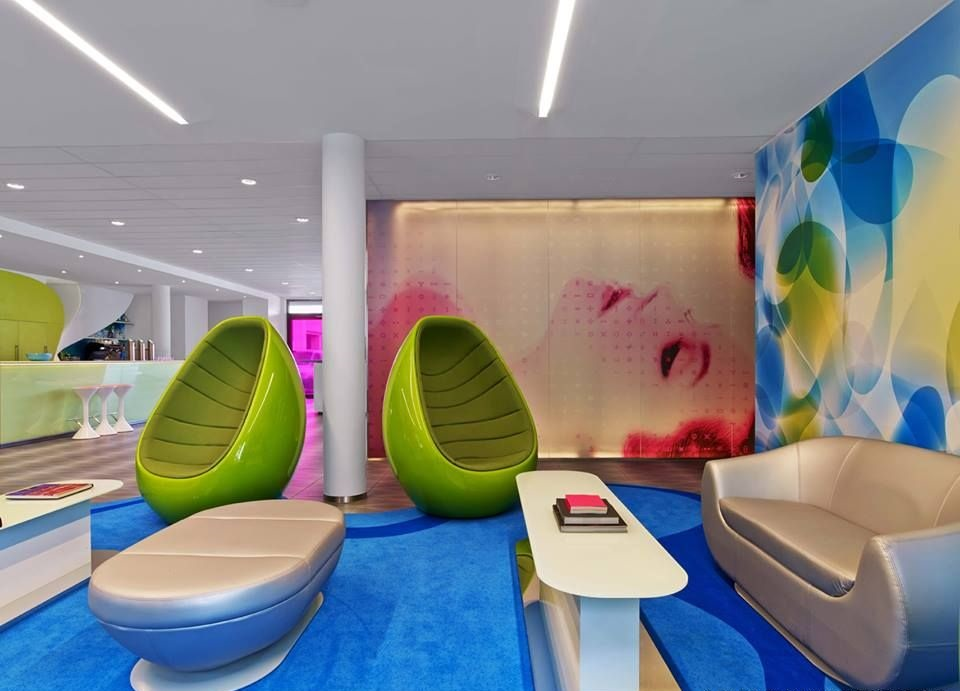
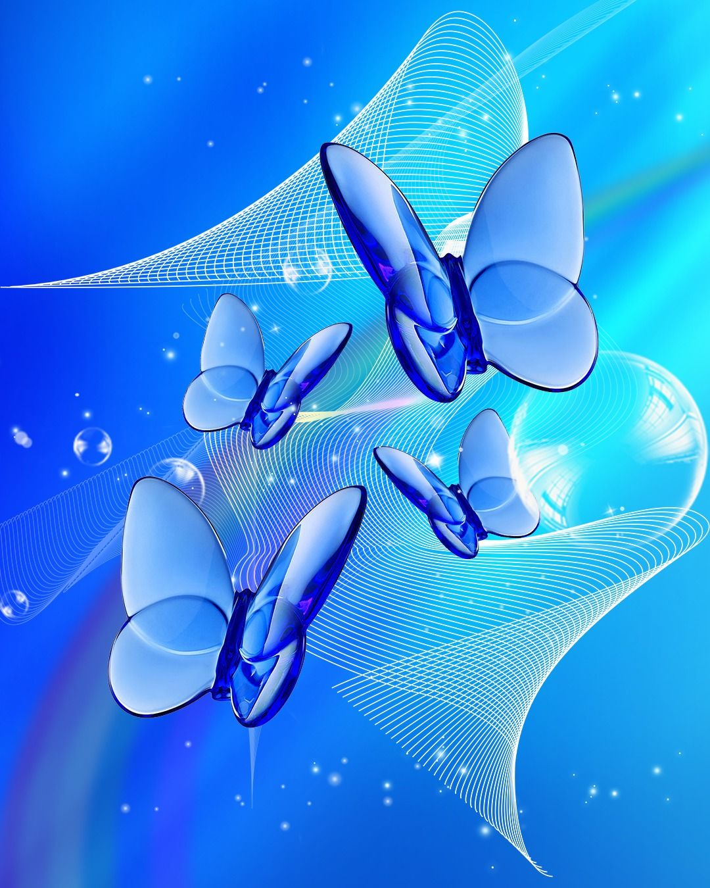
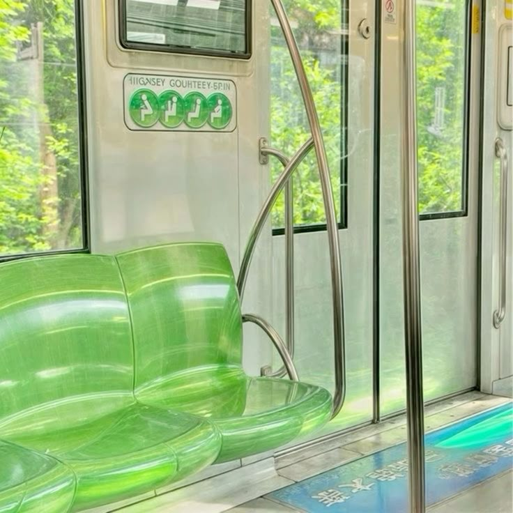